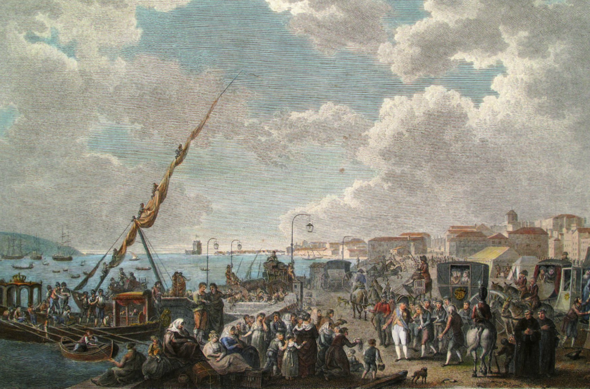
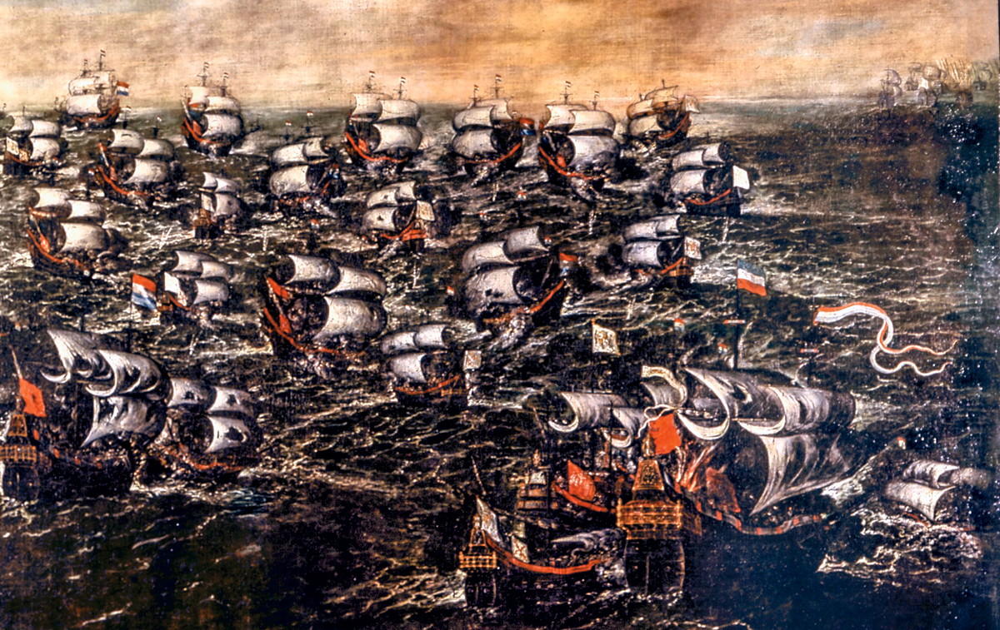

by Ángel Gómez Prol
13/10/2022
The history of Pernambuco can be roughly divided into two periods: first, when the region was a colony of Portugal and, second, when it was a component of the nation of Brazil. Not to be overlooked, however, are the established indigenous peoples of the region, numerous revolts and short-lived independence movements, French incursions, and a Dutch occupation. Located in the Northeast Region of Brazil, Pernambuco was economically prosperous during its early history, first as a source of dye-wood and then sugar, but later languished becoming today a principal state in Brazil's underdeveloped Northeast Region. Following the expulsion of the Dutch from the region in 1654, there were numerous impediments to the development of the region, including a concentrated system of land ownership, its extensive reliance on a single crop, poor communication and transportation, and intense regionalism. In the late 20th century, the region again experienced some success as it developed an industrial sector and improved communication and transportation reduced the effects of regionalism.
Come back to the main page
The first permanent European settlement of Pernambuco was at Olinda in 1535 by Duarte Coelho Pereira, who had been granted a captaincy extending from the mouth of the São Francisco River northward to the vicinity of modern Recife. The Dutch occupied the region from 1630 to 1654, and during their occupation a well-planned town was built where present-day Recife is located. This became the administrative capital. Pernambuco was ably governed by the Dutch and prospered with the production of sugar in the plantations located in the rich alluvial soil along the coast. Portuguese rule replaced that of the Dutch in Pernambuco in 1654. In the early 18th century a bitter rivalry developed between Olinda, the administrative capital of the captaincy and residence of the rich aristocratic plantation owners, and Recife, inhabited by traders, ship chandlers, and warehouse workers. Recife continued to prosper, however, while Olinda declined, and in 1823 Recife was elevated to the category of city (cidade). In 1827 it was made the capital of the província.
Come back to the main page